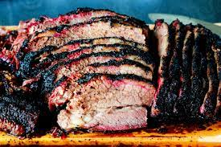

Brisket

Description
A BIG smokey piece of beef!
Ingredients
- Full packer brisket
- Salt
- Pepper
Steps
- Season with salt & pepper
- Heat smoker to 225 degrees
- Cook until brikset is at 160 degrees
- Wrap in foil
- Continue cooking until meat reaches 203 degrees
- Remove from smoker and allow to sit in Cambro for 2 hours